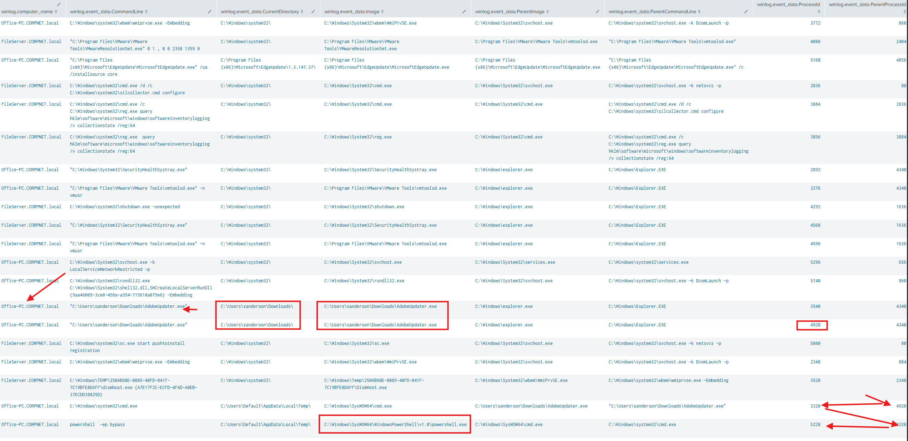
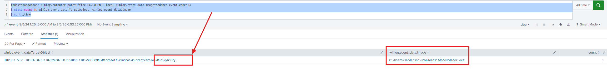
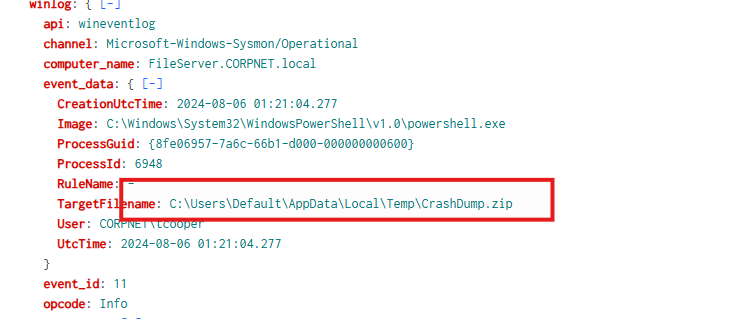
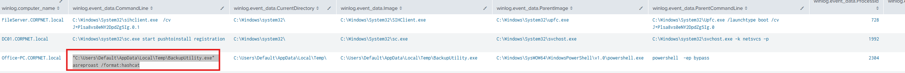
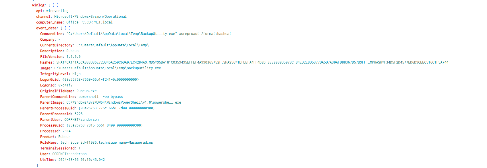
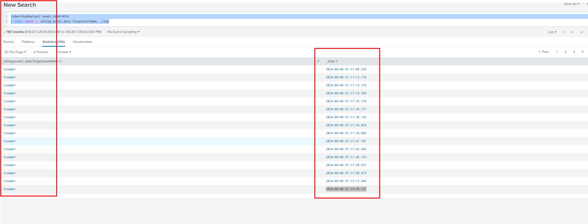
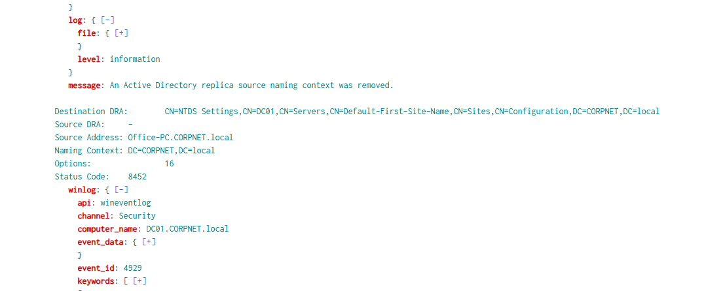
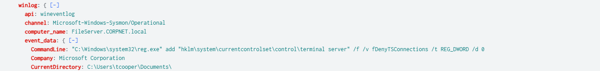
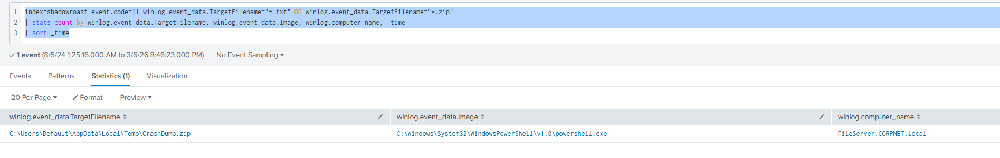

Scenario
As a cybersecurity analyst at TechSecure Corp, you have been alerted to unusual activities within the company's Active Directory environment. Initial reports suggest unauthorized access and possible privilege escalation attempts.
Your task is to analyze the provided logs to uncover the attack's extent and identify the malicious actions taken by the attacker. Your investigation will be crucial in mitigating the threat and securing the network.
Executive Summary:
The investigation identified a multi-stage compromise within the CORPNET environment that began when the user sanderson executed a malicious file named AdobeUpdater.exe from the Downloads directory on Office-PC.CORPNET.local. The executable initiated a suspicious process chain involving cmd.exe and PowerShell with execution policy bypass, and established persistence by creating a registry Run key (wyW5PZyF). The attacker then executed Rubeus to perform an AS-REP Roasting attack, allowing them to harvest Kerberos authentication material and subsequently compromise the domain account tcooper. After gaining valid credentials, the adversary leveraged the account for lateral movement, enabled RDP access, and attempted to manipulate Active Directory using Mimikatz DCShadow techniques. The attacker ultimately staged sensitive data by compressing files into CrashDump.zip, indicating preparation for data exfiltration and demonstrating a progression from initial access to credential abuse, persistence, privilege escalation, and data staging within the environment.
Q1:
What's the malicious file name utilized by the attacker for initial access?
To identify the malicious file used by the attacker to gain initial access, I began by analyzing process creation events (Event ID 1) within the shadowroast index. Process creation logs are valuable during investigations because they provide visibility into executable files launched on the system, including their command line arguments, parent processes, and execution paths.
I executed the following query:
index=shadowroast event.code=1
| stats count by winlog.computer_name, winlog.event_data.CommandLine, winlog.event_data.CurrentDirectory, winlog.event_data.Image, winlog.event_data.ParentImage, winlog.event_data.ParentCommandLine,winlog.event_data.ProcessId, winlog.event_data.ParentProcessId _time
| sort _timeThis query aggregates process creation events and highlights key attributes such as the executed binary, its parent process, command line arguments, and execution directory. The goal was to identify any suspicious executables or abnormal process chains that could indicate malicious activity.
During the review of the results, I identified a suspicious execution involving the file AdobeUpdater.exe, which was launched from the user's Downloads directory by the user sanderson on the host Office-PC.CORPNET.local.
- Host:
Office-PC.CORPNET.local - User:
sanderson - Execution Time:
2024-08-06 01:07:34.837 - Executable:
AdobeUpdater.exe

Further inspection revealed a suspicious process chain. The executable spawned cmd.exe (PID 2320), which subsequently launched powershell.exe (PID 5228) with the argument -ep bypass, indicating an attempt to bypass PowerShell execution policy restrictions.
This behavior strongly suggests that AdobeUpdater.exe was a malicious or trojanized executable used as the initial access vector, masquerading as a legitimate software updater while executing a malicious PowerShell payload.
Q2:
What's the registry run key name created by the attacker for maintaining persistence?
To identify the registry Run key created by the attacker for persistence, I analyzed registry modification events (Event ID 13). Event ID 13 captures registry value creation or modification activity, which is commonly used by attackers to establish persistence mechanisms that execute malware each time a user logs into the system.
I executed the following query:
index=shadowroast winlog.computer_name=Office-PC.CORPNET.local winlog.event_data.Image=*Adobe* event.code=13
| stats count by winlog.event_data.TargetObject, winlog.event_data.Image
| sort _time
This query filters for registry value creation events originating from processes containing Adobe in the image path. Since the previously identified malicious executable was AdobeUpdater.exe, this filter helps isolate registry activity associated with that binary.

After executing the query, the results revealed that C:\Users\sanderson\Downloads\AdobeUpdater.exe created a registry Run key to maintain persistence on the system.
The registry entry created was:
- Registry Path:
...\Run\wyW5PZyF - Executable:
C:\Users\sanderson\Downloads\AdobeUpdater.exe
Run keys are a well-known persistence mechanism because any executable referenced within this location will automatically execute when the user logs in. The presence of this entry indicates that the attacker configured the malicious binary to automatically launch upon user logon, ensuring continued access to the compromised system.
So overall, the registry Run key name created by the attacker is wyW5PZyF.
Q3:
What's the full path of the directory used by the attacker for storing his dropped tools?
To identify the directory used by the attacker to store their tools, I analyzed file creation events (Event ID 11). Event ID 11 logs newly created files and directories, making it useful for detecting malware staging locations or attacker tool repositories.
I executed the following query:
index=shadowroast event.code=11 zip
This query searches for file creation events containing the keyword zip, as attackers frequently compress tools, payloads, or exfiltrated data into archive files for easier transport and execution. ZIP archives are commonly used during post-compromise activity to bundle offensive tooling or stage data for later use.
Upon reviewing the results, I identified a relevant event occurring at 2024-08-06 01:21:04.278 on the host FileServer.CORPNET.local, associated with the user CORPNET\tcooper.
The event revealed the creation of a ZIP archive located in the following directory:
- Host:
FileServer.CORPNET.local - User:
CORPNET\tcooper - Timestamp:
2024-08-06 01:21:04.278

This activity suggests that the attacker had already moved laterally within the environment, compromising an additional user account and accessing another system to stage their tools. The use of a ZIP archive further supports the likelihood that this directory was used as a storage location for attacker utilities or malicious payloads.
Q4:
What tool was used by the attacker for privilege escalation and credential harvesting?
To identify the tool used by the attacker for privilege escalation and credential harvesting, I revisited the process creation events (Event ID 1) previously analyzed in Question 1. These logs provide visibility into executed binaries and their associated command-line arguments, which can reveal attacker tooling and techniques.
During the review of these events, I observed that at 2024-08-06 01:10:45.053, the previously identified PowerShell process (PID 5228) spawned a new executable named BackupUtility.exe.
The command-line arguments associated with this process were:
"C:\Users\Default\AppData\Local\Temp\BackupUtility.exe" asreproast /format:hashcat
This command immediately raised suspicion due to the presence of the asreproast argument.
AS-REP Roasting is a well-known Active Directory attack technique that targets accounts configured with the setting:
Do not require Kerberos preauthenticationWhen this configuration is enabled:
- The domain controller returns an encrypted authentication response (AS-REP) without requiring the user’s password.
- Attackers can request this authentication data directly from the domain controller.
- The returned Kerberos ticket hash can then be cracked offline, allowing attackers to recover the account’s plaintext password.
The use of the argument /format:hashcat further indicates that the attacker intended to export the captured hashes in a format compatible with the Hashcat password cracking tool.
Upon expanding the event details in Splunk, it became clear that BackupUtility.exe appears to be a renamed instance of the tool Rubeus, a well-known post-exploitation framework used for Kerberos abuse and credential harvesting.
Rubeus supports multiple Kerberos-based attack techniques, including:
- AS-REP Roasting
- Kerberoasting
- Ticket extraction and manipulation
- Privilege escalation through Kerberos abuse
Based on the command-line arguments and process behavior observed in the logs, the attacker used Rubeus to perform AS-REP Roasting, likely targeting vulnerable domain accounts in order to recover credentials through offline password cracking.

Q5:
Was the attacker's credential harvesting successful? If so, can you provide the compromised domain account username?
Yes, the credential harvesting attempt was successful.
Following the discovery of the AS-REP roasting activity executed via Rubeus at 2024-08-06 01:10:45.053, I pivoted to reviewing successful authentication events (Event ID 4624) to determine whether the attacker was able to leverage any cracked credentials.
The objective was to identify new logon activity occurring shortly after the credential harvesting attempt, which could indicate that the attacker had successfully recovered a password and used it to authenticate to the environment.
To accomplish this, I executed the following query:
index=shadowroast event.code=4624
| stats count by winlog.event_data.TargetUserName, _timeThis query retrieves successful logon events and groups them by username and timestamp, allowing us to observe authentication activity following the credential harvesting attempt.
Upon reviewing the results, I observed a successful logon event for the domain user tcooper at 2024-08-06 01:13:28.285.
This authentication event occurred approximately three minutes after the Rubeus AS-REP roasting command was executed, strongly suggesting that the attacker successfully cracked the harvested Kerberos hash and used the recovered credentials to authenticate to the environment.
Additionally, multiple logon events involving tcooper were observed following the initial authentication, continuing until 2024-08-06 01:19:20.137. This pattern further reinforces that the attacker had obtained valid credentials and was actively using the compromised account during post-exploitation activities.

Q6:
What's the tool used by the attacker for registering a rogue Domain Controller to manipulate Active Directory data?
To identify the tool used by the attacker to register a rogue Domain Controller, I focused on Windows security events associated with Active Directory replication activity. Specifically, events 4928, 4929, and 4662 are commonly associated with replication permissions and directory replication operations, which can be abused during attacks such as DCShadow.
DCShadow is a technique that allows an attacker to register a rogue Domain Controller and push malicious changes into Active Directory, effectively bypassing many traditional monitoring controls.
To investigate this behavior, I filtered for Event ID 4929, which logs when Active Directory replication is initiated.
Upon reviewing the results, I observed the following suspicious activity:
- Event ID: 4929
- Source System:
Office-PC.CORPNET.local

Under normal circumstances, Active Directory replication should only occur between legitimate domain controllers. However, in this case, the replication request originated from Office-PC.CORPNET.local, which is not a domain controller.
This anomaly strongly suggests that the attacker configured the compromised system to impersonate a domain controller and initiate replication activity, which is a defining characteristic of a DCShadow attack.
DCShadow attacks are commonly executed using the Mimikatz toolkit, which contains built-in modules specifically designed to register rogue domain controllers and manipulate Active Directory replication metadata.
Based on the abnormal replication activity and the known tooling used for this technique, the attacker utilized Mimikatz to perform the rogue Domain Controller registration and manipulate Active Directory data.
Therefore, the tool used by the attacker was Mimikatz.
Q7:
What's the first command used by the attacker for enabling RDP on remote machines for lateral movement?
To identify the command used by the attacker to enable Remote Desktop Protocol (RDP) for lateral movement, I investigated registry modification activity related to RDP configuration.
In Windows systems, the ability to allow or deny RDP connections is controlled by the following registry key:
HKLM\SYSTEM\CurrentControlSet\Control\Terminal Server\fDenyTSConnections
This value determines whether Remote Desktop connections are allowed:
1→ RDP is disabled0→ RDP is enabled
I filtered the logs for registry activity involving this key to identify when it was modified. The results revealed a command executed by the attacker that modified this registry value.
The command observed was:
reg add HKLM\SYSTEM\CurrentControlSet\Control\Terminal Server /v fDenyTSConnections /t REG_DWORD /d 0 /f
The parameter /d 0 indicates that the registry value was changed to enable RDP connections.

By modifying this setting, the attacker enabled Remote Desktop access on the system, allowing them to remotely access compromised machines and perform lateral movement within the environment. Enabling RDP is a common post-exploitation technique because it provides attackers with interactive remote access while blending in with legitimate administrative activity.
Q8:
What's the file name created by the attacker after compressing confidential files?
During the earlier stages of the investigation, specifically in Question 3, I identified suspicious file creation events (Event ID 11) that suggested the attacker was staging data.
index=shadowroast event.code=11 winlog.event_data.TargetFilename="*.txt" OR winlog.event_data.TargetFilename="*.zip"
| stats count by winlog.event_data.TargetFilename, winlog.event_data.Image, winlog.computer_name, _time
| sort _time
With that command, we can see the malicious actor created CrashDump.zip which was utilized for his malicious purposes.

The results revealed that the attacker created the archive file CrashDump.zip. The creation of this archive strongly suggests that the attacker compressed confidential data into a single file for easier transfer or exfiltration from the environment.
- File Created:
CrashDump.zip - Event Type: File creation (Event ID 11)
Timeline:
| Time (UTC) | Host | User | Activity | Description |
|---|---|---|---|---|
| 2024-08-06 01:07:34.837 | Office-PC.CORPNET.local | sanderson | Initial Execution | AdobeUpdater.exe executed from the user's Downloads directory, likely masquerading as a legitimate updater to gain initial access. |
| 2024-08-06 01:07:35 | Office-PC.CORPNET.local | sanderson | Process Chain | AdobeUpdater.exe spawned cmd.exe, which subsequently launched PowerShell with -ep bypass, indicating an attempt to bypass PowerShell execution policies. |
| 2024-08-06 01:08:xx | Office-PC.CORPNET.local | sanderson | Persistence | The malware created a registry Run key wyW5PZyF to maintain persistence on system startup. |
| 2024-08-06 01:10:45.053 | Office-PC.CORPNET.local | sanderson | Credential Harvesting | PowerShell executed BackupUtility.exe (Rubeus) with the argument asreproast /format:hashcat, indicating an AS-REP Roasting attack against Active Directory accounts. |
| 2024-08-06 01:13:28.285 | Office-PC.CORPNET.local/File Server | tcooper | Credential Abuse | Successful authentication (Event ID 4624) for the user tcooper, approximately 3 minutes after the AS-REP roasting attack, suggesting the attacker cracked the credentials offline. |
| 2024-08-06 ~01:14–01:19 | Office-PC.CORPNET.local/File Server | tcooper | Post-Exploitation | Multiple successful logons using tcooper, indicating continued attacker activity using the compromised account. |
| 2024-08-06 ~01:20 | CORPNET Environment | Attacker | Active Directory Manipulation | Suspicious AD replication events (Event ID 4929) from Office-PC.CORPNET.local, indicating a DCShadow attack using Mimikatz to register a rogue Domain Controller. |
| 2024-08-06 ~01:21:04.278 | FileServer.CORPNET.local | CORPNET\tcooper | Lateral Movement | Evidence of activity on a new host suggests the attacker moved laterally using the compromised credentials. |
| 2024-08-06 ~01:21 | FileServer.CORPNET.local | CORPNET\tcooper | Data Staging | The attacker created the archive CrashDump.zip, likely compressing sensitive files for potential exfiltration. |